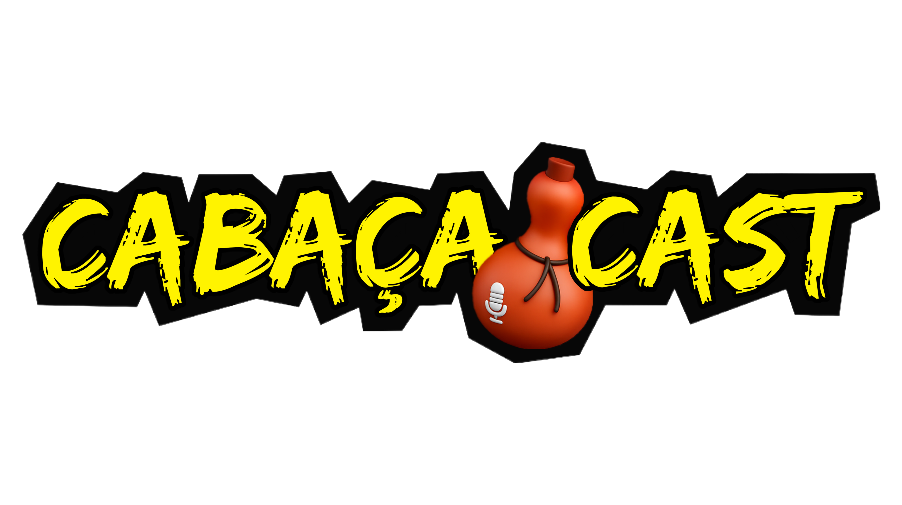

Porque todo mundo tem uma linda história e pode contá-la.

Assistam a Live 77 anos de Leopoldo de Bulhões.
.
Introdução
🎉 O município de Leopoldo de Bulhões, em Goiás, celebrou seus 77 anos de emancipação política com uma programação especial que envolveu toda a comunidade! As festividades marcaram um momento de orgulho e valorização da história local, que começou oficialmente em 1º de janeiro de 1949, após a emancipação pela Lei nº 127, sancionada em 1948.
🏞️ Leopoldo de Bulhões tem uma história rica, que começou como o povoado de Pindaibinha, às margens do córrego Pindaíba. Com a chegada da Estrada de Ferro Goiás em 1928, o local se desenvolveu rapidamente. O nome atual homenageia José Leopoldo de Bulhões Jardim, político goiano que foi Ministro da Fazenda e diretor do Banco do Brasil.